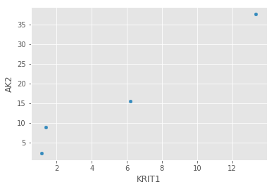
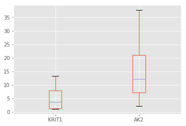
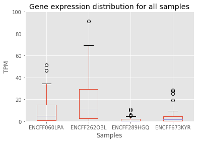
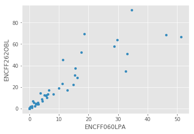
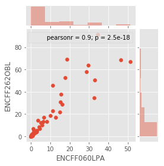
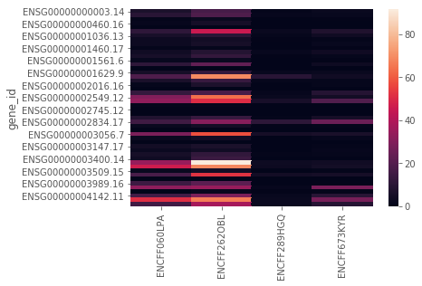
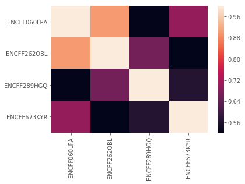
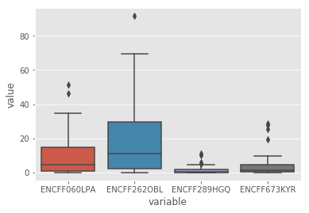

5 Pandas 学习教程
B 站视频课程 （生信宝典知乎号、视频号同步更新）https://space.bilibili.com/362709786/lists/1988354?type=season
5.1 What is pandas
Pandas是python中用于处理矩阵样数据的功能强大的包，提供了R中的dataframe和vector的操作，使得我们在使用python时，也可以方便、简单、快捷、高效地进行矩阵数据处理。
具体介绍详见http://pandas.pydata.org/。
- A fast and efficient DataFrame object for data manipulation with integrated indexing;
- Tools for reading and writing data between in-memory data structures and different formats: CSV and text files, Microsoft Excel, SQL databases, and the fast HDF5 format;
- Intelligent data alignment and integrated handling of missing data: gain automatic label-based alignment in computations and easily manipulate messy data into an orderly form;
- Flexible reshaping and pivoting of data sets;
- Intelligent label-based slicing, fancy indexing, and subsetting of large data sets;
- Columns can be inserted and deleted from data structures for size mutability;
- Aggregating or transforming data with a powerful group by engine allowing split-apply-combine operations on data sets;
- High performance merging and joining of data sets;
- Hierarchical axis indexing provides an intuitive way of working with high-dimensional data in a lower-dimensional data structure;
- Time series-functionality: date range generation and frequency conversion, moving window statistics, moving window linear regressions, date shifting and lagging. Even create domain-specific time offsets and join time series without losing data;
- Highly optimized for performance, with critical code paths written in Cython or C.
- Python with pandas is in use in a wide variety of academic and commercial domains, including Finance, Neuroscience, Economics, Statistics, Advertising, Web Analytics, and more.
5.2 Pandas读取文件
5.2.1 获取目标文件
['py_data/ENCFF060LPA.tsv',
'py_data/ENCFF262OBL.tsv',
'py_data/ENCFF289HGQ.tsv',
'py_data/ENCFF673KYR.tsv',
'py_data/gencode.v24.ENS2SYN',
'py_data/meta.tsv',
'py_data/gencode.gene.gtf',
'py_data/gencode.gene.bed12',
'py_data/ensm.id',
'py_data/GRCh38.idmap']5.2.2 查看目标文件内容和格式
Ipython中可以通过在Linux命令前加!调用系统命令，更多使用见
http://ipython.org/ipython-doc/3/interactive/reference.html#system-shell-access.
gene_id gene_symbol
ENSG00000001460.17 STPG1
ENSG00000001461.16 NIPAL3
ENSG00000000938.12 FGRgene_id transcript_id(s) length effective_length expected_count TPM FPKM
ENSG00000000003.14 ENST00000373020.8,ENST00000494424.1,ENST00000496771.5,ENST00000612152.4,ENST00000614008.4 2240.53 2020.49 5126.00 6.64 18.24
ENSG00000000005.5 ENST00000373031.4,ENST00000485971.1 940.50 720.47 0.00 0.00 0.00
ENSG00000000419.12 ENST00000371582.8,ENST00000371584.8,ENST00000371588.9,ENST00000413082.1,ENST00000466152.5,ENST00000494752.1 1072.03 851.99 3222.00 9.91 27.195.2.3 读取两列文件
# pandas中的计数都是从0开始的
# header=0: 指定第一行包含列的名字
# index_col=0: 指定第一列为行的名字
ens2syn = pd.read_table(ens2syn_file, header=0, index_col=0)| gene_symbol | |
|---|---|
| gene_id | |
| ENSG00000001460.17 | STPG1 |
| ENSG00000001461.16 | NIPAL3 |
| ENSG00000000938.12 | FGR |
| ENSG00000004455.16 | AK2 |
| ENSG00000000460.16 | C1orf112 |
5.2.4 数据表的索引
* 数值索引和布尔值索引是按行选取
* 字符串索引是按列选取
* 行和列是等效的，应用于行的选取函数也可应用于列，反之亦然5.2.4.1 按行选取数据
| gene_symbol | |
|---|---|
| gene_id | |
| ENSG00000001460.17 | STPG1 |
| ENSG00000001461.16 | NIPAL3 |
| ENSG00000000938.12 | FGR |
5.2.5 读取多列文件
gzip, bzip压缩的文件也可以直接读取，但是需要保证文件后缀的正确。
read_table默认参数可以自动检测文件的格式，根据文件的后缀 ‘.gz’, ‘.bz2’, ‘.zip’, or ’xz’分别使用 gzip, bz2, zip or xz读取。
['py_data/ENCFF060LPA.tsv',
'py_data/ENCFF262OBL.tsv',
'py_data/ENCFF289HGQ.tsv',
'py_data/ENCFF673KYR.tsv']| transcript_id(s) | length | effective_length | expected_count | TPM | FPKM | |
|---|---|---|---|---|---|---|
| gene_id | ||||||
| ENSG00000000003.14 | ENST00000373020.8,ENST00000494424.1,ENST000004... | 2240.53 | 2020.49 | 5126.0 | 6.64 | 18.24 |
| ENSG00000000005.5 | ENST00000373031.4,ENST00000485971.1 | 940.50 | 720.47 | 0.0 | 0.00 | 0.00 |
| ENSG00000000419.12 | ENST00000371582.8,ENST00000371584.8,ENST000003... | 1072.03 | 851.99 | 3222.0 | 9.91 | 27.19 |
5.2.6 选取多列数据
列的输出顺序与给定的列名字的顺序一致
| FPKM | TPM | |
|---|---|---|
| gene_id | ||
| ENSG00000000003.14 | 18.24 | 6.64 |
| ENSG00000000005.5 | 0.00 | 0.00 |
| ENSG00000000419.12 | 27.19 | 9.91 |
5.2.7 重命名列名字
从Dataframe中只选取一列时，数据框会被转换成Series，因此需要使用pd.loc[:,[column_name]](虽然内部的方括号内只有一个值，但写法是必须的)索引。
'ENCFF060LPA'# 因为要把多个文件的同一类型表达值合并到一个文件，我们使用文件名作为列的名字
name = os.path.split(tsvFile)[-1][:-4]
print(name)
expr_tpm = expr.loc[:,['TPM']] # 取出所有的行和名字为TPM的列
#expr_tpm.head()
# 给列重命名
expr_tpm.columns=[name]
expr_tpm[:3]ENCFF060LPA| ENCFF060LPA | |
|---|---|
| gene_id | |
| ENSG00000000003.14 | 6.64 |
| ENSG00000000005.5 | 0.00 |
| ENSG00000000419.12 | 9.91 |
5.2.8 合并矩阵
5.2.8.1 定义函数简化文件读取
# 为了读取多个文件，定义一个函数简化操作
def readExpr_1(tsvFileL, typeL=['TPM','FPKM']):
'''
tsvFileL: lists of files waiting for reading
resultD: a dictionary to save data matrix
{'TPM':[mat1, mat2,...]
'FPKM':[mat1, mat2, ...]}
typeL; list of names for columns to be extracted
'''
resultD = {}
for _type in typeL: resultD[_type] = []
for tsvFile in tsvFileL:
expr = pd.read_table(tsvFile, header=0, index_col=0)
name = os.path.split(tsvFile)[-1][:-4] #this option is very arbitary
for _type in typeL:
# add _ to type to avoid override Python inner function `type`
expr_type = expr.loc[:,[_type]]
expr_type.columns = [name]
resultD[_type].append(expr_type)
return resultD
#-----------------------------------------------------5.2.8.2 使用pd.merge合并矩阵示例
先从刚才读取的矩阵中选出2个测试下pandas中的矩阵合并方法和效果
# 选取第一个矩阵
_idL = ['ENSG00000000003.14', 'ENSG00000000005.5','ENSG00000000419.12',
'ENSG00000000457.13']
mat1 = TPM_mat[0]
mat1 = mat1[mat1.index.isin(_idL)]
mat1| ENCFF060LPA | |
|---|---|
| gene_id | |
| ENSG00000000003.14 | 6.64 |
| ENSG00000000005.5 | 0.00 |
| ENSG00000000419.12 | 9.91 |
| ENSG00000000457.13 | 0.86 |
# 选取第二个矩阵
_idL = ['ENSG00000001561.6','ENSG00000000003.14', 'ENSG00000000419.12','ENSG00000001036.13']
mat2 = TPM_mat[1]
mat2 = mat2[mat2.index.isin(_idL)]
mat2| ENCFF262OBL | |
|---|---|
| gene_id | |
| ENSG00000000003.14 | 17.13 |
| ENSG00000000419.12 | 18.86 |
| ENSG00000001036.13 | 10.34 |
| ENSG00000001561.6 | 2.47 |
基于索引(index)的合并 * outer: 合并所有的索引，缺失值填充NA * inner：保留共有的索引 * left：使用第一个矩阵的索引 * right：使用第二个矩阵的索引
| ENCFF060LPA | ENCFF262OBL | |
|---|---|---|
| gene_id | ||
| ENSG00000000003.14 | 6.64 | 17.13 |
| ENSG00000000005.5 | 0.00 | NaN |
| ENSG00000000419.12 | 9.91 | 18.86 |
| ENSG00000000457.13 | 0.86 | NaN |
| ENSG00000001036.13 | NaN | 10.34 |
| ENSG00000001561.6 | NaN | 2.47 |
| ENCFF060LPA | ENCFF262OBL | |
|---|---|---|
| gene_id | ||
| ENSG00000000003.14 | 6.64 | 17.13 |
| ENSG00000000419.12 | 9.91 | 18.86 |
| ENCFF060LPA | ENCFF262OBL | |
|---|---|---|
| gene_id | ||
| ENSG00000000003.14 | 6.64 | 17.13 |
| ENSG00000000005.5 | 0.00 | NaN |
| ENSG00000000419.12 | 9.91 | 18.86 |
| ENSG00000000457.13 | 0.86 | NaN |
5.2.8.3 使用pd.concat合并矩阵示例
对于较多的数据表合并操作时，concat比merge要简单快速很多。
| ENCFF060LPA | ENCFF262OBL | |
|---|---|---|
| ENSG00000000003.14 | 6.64 | 17.13 |
| ENSG00000000005.5 | 0.00 | NaN |
| ENSG00000000419.12 | 9.91 | 18.86 |
| ENSG00000000457.13 | 0.86 | NaN |
| ENSG00000001036.13 | NaN | 10.34 |
| ENSG00000001561.6 | NaN | 2.47 |
| ENCFF060LPA | ENCFF262OBL | |
|---|---|---|
| gene_id | ||
| ENSG00000000003.14 | 6.64 | 17.13 |
| ENSG00000000419.12 | 9.91 | 18.86 |
5.2.8.4 使用pd.join合并矩阵示例
| ENCFF060LPA | ENCFF262OBL | |
|---|---|---|
| gene_id | ||
| ENSG00000000003.14 | 6.64 | 17.13 |
| ENSG00000000005.5 | 0.00 | NaN |
| ENSG00000000419.12 | 9.91 | 18.86 |
| ENSG00000000457.13 | 0.86 | NaN |
| ENSG00000001036.13 | NaN | 10.34 |
| ENSG00000001561.6 | NaN | 2.47 |
替换NA值为0
| ENCFF060LPA | ENCFF262OBL | |
|---|---|---|
| gene_id | ||
| ENSG00000000003.14 | 6.64 | 17.13 |
| ENSG00000000005.5 | 0.00 | 0.00 |
| ENSG00000000419.12 | 9.91 | 18.86 |
| ENSG00000000457.13 | 0.86 | 0.00 |
| ENSG00000001036.13 | 0.00 | 10.34 |
| ENSG00000001561.6 | 0.00 | 2.47 |
去除所有值都为0的行
| ENCFF060LPA | ENCFF262OBL | |
|---|---|---|
| gene_id | ||
| ENSG00000000003.14 | 6.64 | 17.13 |
| ENSG00000000419.12 | 9.91 | 18.86 |
| ENSG00000000457.13 | 0.86 | 0.00 |
| ENSG00000001036.13 | 0.00 | 10.34 |
| ENSG00000001561.6 | 0.00 | 2.47 |
5.2.8.5 测试三种方法使用的内存和速度比较
速度：concat>join>>merge
内存：相当
# 不错的reduce教程
from functools import reduce
%timeit test_merge = reduce(lambda left,right: pd.merge(left,right,left_index=True,right_index=True,how='outer'), TPM_mat)3.04 ms ± 52.4 µs per loop (mean ± std. dev. of 7 runs, 100 loops each)1.29 ms ± 30.5 µs per loop (mean ± std. dev. of 7 runs, 1000 loops each)1.31 ms ± 11.2 µs per loop (mean ± std. dev. of 7 runs, 1000 loops each)%memit test_merge = reduce(lambda left,right: pd.merge(left,right,left_index=True,right_index=True,how='outer'), TPM_mat)peak memory: 101.27 MiB, increment: 0.02 MiBpeak memory: 101.28 MiB, increment: 0.00 MiBpeak memory: 101.28 MiB, increment: 0.00 MiB5.2.8.6 重写函数完成文件的读写和矩阵的合并
# 读取多个文件，并且合并矩阵，定义一个函数简化操作
def concatExpr(tsvFileL, typeL=['TPM','FPKM']):
'''
tsvFileL: lists of files waiting for reading
resultD: a dictionary to save data matrix
{'TPM':[mat1, mat2,...]
'FPKM':[mat1, mat2, ...]}
typeL; list of names for columns to be extracted
'''
resultD = {}
for _type in typeL: resultD[_type] = []
for tsvFile in tsvFileL:
expr = pd.read_table(tsvFile, header=0, index_col=0)
name = os.path.split(tsvFile)[-1][:-4] #this options is very arbitary
for _type in typeL: # add _ to type to avoid override Python inner function `type`
expr_type = expr.loc[:,[_type]]
expr_type.columns = [name]
resultD[_type].append(expr_type)
#-------------------------------------------
mergeD = {}
for _type in typeL:
mergeM = pd.concat(resultD[_type], axis=1)
mergeM = mergeM.fillna(0) # Substitute all NA with 0
mergeM = mergeM.loc[(mergeM>0).any(axis=1)] # Delete aoo zero rows.
mergeD[_type] = mergeM
return mergeD
#-----------------------------------------------------typeL = ['TPM','FPKM']
exprD = concatExpr(tsvL, typeL)
TPM_mat = exprD['TPM']
FPKM_mat = exprD['FPKM']| ENCFF060LPA | ENCFF262OBL | ENCFF289HGQ | ENCFF673KYR | |
|---|---|---|---|---|
| gene_id | ||||
| ENSG00000000003.14 | 6.64 | 17.13 | 1.03 | 2.42 |
| ENSG00000000419.12 | 9.91 | 18.86 | 1.45 | 1.80 |
| ENSG00000000457.13 | 0.86 | 2.48 | 0.24 | 0.38 |
| ENSG00000000460.16 | 1.51 | 5.36 | 0.26 | 0.16 |
| ENSG00000000938.12 | 0.01 | 0.05 | 0.00 | 0.00 |
5.2.9 矩阵数据提取
只保留表达矩阵中存储的基因的ID和Symbol对照表
| gene_symbol | |
|---|---|
| gene_id | |
| ENSG00000001460.17 | STPG1 |
| ENSG00000001461.16 | NIPAL3 |
| ENSG00000000938.12 | FGR |
(48, 1)(48, 1)| gene_symbol | |
|---|---|
| gene_id | |
| ENSG00000001460.17 | STPG1 |
| ENSG00000001461.16 | NIPAL3 |
| ENSG00000000938.12 | FGR |
5.2.10 读取META data文件
meta = "data/meta.tsv"
metaM = pd.read_table(meta, header=0, index_col=0)
# 重名了列的名字
oriColnames = metaM.columns.values
nameD = dict([(i,i.replace(' ','_')) for i in oriColnames])
metaM.rename(columns=nameD, inplace=True)
metaM.head(3)| Biosample_term_id | Biosample_term_name | Biosample_type | Biosample_life_stage | Biosample_sex | Biosample_organism | Biosample_treatments | Biosample_subcellular_fraction_term_name | Biosample_phase | Biosample_synchronization_stage | Biosample_Age | |
|---|---|---|---|---|---|---|---|---|---|---|---|
| File accession | |||||||||||
| ENCFF673KYR | CL:0000650 | mesangial cell | primary cell | unknown, fetal | unknown, female | Homo sapiens | NaN | NaN | NaN | NaN | NaN |
| ENCFF262OBL | CL:1001568 | pulmonary artery endothelial cell | primary cell | adult | male | Homo sapiens | NaN | NaN | NaN | NaN | 52 year |
| ENCFF060LPA | CL:1001568 | pulmonary artery endothelial cell | primary cell | adult | male | Homo sapiens | NaN | NaN | NaN | NaN | 23 year |
5.2.10.1 只保留前面提到的4个样品的数据
sampleL = TPM_mat.columns.values
metaM = metaM[metaM.index.isin(sampleL)]
# 同时索引行和列
metaM.iloc[:4,:5]| Biosample_term_id | Biosample_term_name | Biosample_type | Biosample_life_stage | Biosample_sex | |
|---|---|---|---|---|---|
| File accession | |||||
| ENCFF673KYR | CL:0000650 | mesangial cell | primary cell | unknown, fetal | unknown, female |
| ENCFF262OBL | CL:1001568 | pulmonary artery endothelial cell | primary cell | adult | male |
| ENCFF060LPA | CL:1001568 | pulmonary artery endothelial cell | primary cell | adult | male |
| ENCFF289HGQ | CL:0002558 | fibroblast of villous mesenchyme | primary cell | newborn | male, female |
5.2.10.2 提取目标列信息
# 假如只提取`Biosample`开头的列
#meta_colL = ['Biosample term id', 'Biosample term name']
# Extract columns matching specific patterns
# Both works well, filter is more simple
#metaM.loc[:,metaM.columns.str.contains(r'^Biosample')]
metaM = metaM.filter(regex=("^Biosample"))
metaM| Biosample_term_id | Biosample_term_name | Biosample_type | Biosample_life_stage | Biosample_sex | Biosample_organism | Biosample_treatments | Biosample_subcellular_fraction_term_name | Biosample_phase | Biosample_synchronization_stage | Biosample_Age | |
|---|---|---|---|---|---|---|---|---|---|---|---|
| File accession | |||||||||||
| ENCFF673KYR | CL:0000650 | mesangial cell | primary cell | unknown, fetal | unknown, female | Homo sapiens | NaN | NaN | NaN | NaN | NaN |
| ENCFF262OBL | CL:1001568 | pulmonary artery endothelial cell | primary cell | adult | male | Homo sapiens | NaN | NaN | NaN | NaN | 52 year |
| ENCFF060LPA | CL:1001568 | pulmonary artery endothelial cell | primary cell | adult | male | Homo sapiens | NaN | NaN | NaN | NaN | 23 year |
| ENCFF289HGQ | CL:0002558 | fibroblast of villous mesenchyme | primary cell | newborn | male, female | Homo sapiens | NaN | NaN | NaN | NaN | NaN |
| Biosample_term_id | Biosample_term_name | Biosample_type | Biosample_life_stage | Biosample_sex | Biosample_organism | Biosample_treatments | Biosample_subcellular_fraction_term_name | Biosample_phase | Biosample_synchronization_stage | Biosample_Age | |
|---|---|---|---|---|---|---|---|---|---|---|---|
| File accession | |||||||||||
| ENCFF673KYR | CL:0000650 | mesangial cell | primary cell | unknown, fetal | unknown, female | Homo sapiens | |||||
| ENCFF262OBL | CL:1001568 | pulmonary artery endothelial cell | primary cell | adult | male | Homo sapiens | 52 year | ||||
| ENCFF060LPA | CL:1001568 | pulmonary artery endothelial cell | primary cell | adult | male | Homo sapiens | 23 year | ||||
| ENCFF289HGQ | CL:0002558 | fibroblast of villous mesenchyme | primary cell | newborn | male, female | Homo sapiens |
5.4 PANDAS矩阵的小应用
利用上面的矩阵操作，选取这两个基因相关的信息并绘制表达谱
Gene_symbol转换为Gene_id
| gene_symbol | |
|---|---|
| gene_id | |
| ENSG00000004455.16 | AK2 |
| ENSG00000001631.14 | KRIT1 |
提取目标基因的表达
| ENCFF060LPA | ENCFF262OBL | ENCFF289HGQ | ENCFF673KYR | |
|---|---|---|---|---|
| gene_id | ||||
| ENSG00000001631.14 | 6.21 | 13.36 | 1.15 | 1.37 |
| ENSG00000004455.16 | 15.57 | 37.62 | 2.31 | 8.95 |
重命名矩阵的索引
{'gene_symbol': {'ENSG00000001631.14': 'KRIT1', 'ENSG00000004455.16': 'AK2'}}| ENCFF060LPA | ENCFF262OBL | ENCFF289HGQ | ENCFF673KYR | |
|---|---|---|---|---|
| gene_id | ||||
| KRIT1 | 6.21 | 13.36 | 1.15 | 1.37 |
| AK2 | 15.57 | 37.62 | 2.31 | 8.95 |
转置矩阵以增加META信息
| gene_id | KRIT1 | AK2 |
|---|---|---|
| ENCFF060LPA | 6.21 | 15.57 |
| ENCFF262OBL | 13.36 | 37.62 |
| ENCFF289HGQ | 1.15 | 2.31 |
| ENCFF673KYR | 1.37 | 8.95 |
从meta矩阵中提取4列信息
| Biosample_term_id | Biosample_term_name | Biosample_type | Biosample_life_stage | Biosample_sex | Biosample_organism | Biosample_treatments | Biosample_subcellular_fraction_term_name | Biosample_phase | Biosample_synchronization_stage | Biosample_Age | |
|---|---|---|---|---|---|---|---|---|---|---|---|
| File accession | |||||||||||
| ENCFF673KYR | CL:0000650 | mesangial cell | primary cell | unknown, fetal | unknown, female | Homo sapiens | NaN | NaN | NaN | NaN | NaN |
| ENCFF262OBL | CL:1001568 | pulmonary artery endothelial cell | primary cell | adult | male | Homo sapiens | NaN | NaN | NaN | NaN | 52 year |
| ENCFF060LPA | CL:1001568 | pulmonary artery endothelial cell | primary cell | adult | male | Homo sapiens | NaN | NaN | NaN | NaN | 23 year |
| Biosample_term_name | Biosample_type | Biosample_life_stage | Biosample_sex | |
|---|---|---|---|---|
| File accession | ||||
| ENCFF673KYR | mesangial cell | primary cell | unknown, fetal | unknown, female |
| ENCFF262OBL | pulmonary artery endothelial cell | primary cell | adult | male |
| ENCFF060LPA | pulmonary artery endothelial cell | primary cell | adult | male |
| ENCFF289HGQ | fibroblast of villous mesenchyme | primary cell | newborn | male, female |
| KRIT1 | AK2 | Biosample_term_name | Biosample_type | Biosample_life_stage | Biosample_sex | |
|---|---|---|---|---|---|---|
| ENCFF060LPA | 6.21 | 15.57 | pulmonary artery endothelial cell | primary cell | adult | male |
| ENCFF262OBL | 13.36 | 37.62 | pulmonary artery endothelial cell | primary cell | adult | male |
| ENCFF289HGQ | 1.15 | 2.31 | fibroblast of villous mesenchyme | primary cell | newborn | male, female |
| ENCFF673KYR | 1.37 | 8.95 | mesangial cell | primary cell | unknown, fetal | unknown, female |
| KRIT1 | AK2 | Biosample_life_stage | Biosample_sex | |
|---|---|---|---|---|
| ENCFF060LPA | 6.21 | 15.57 | adult | male |
| ENCFF262OBL | 13.36 | 37.62 | adult | male |
| ENCFF289HGQ | 1.15 | 2.31 | newborn | male, female |
| ENCFF673KYR | 1.37 | 8.95 | unknown, fetal | unknown, female |
绘制散点图
<matplotlib.axes._subplots.AxesSubplot at 0x7fbf95322390>
绘制箱线图

绘制每个样品的基因表达分布
ax = TPM_mat.boxplot(list(TPM_mat.columns))
ax.set_ylim(0,100)
ax.set_ylabel("TPM")
ax.set_xlabel("Samples")
ax.set_title("Gene expression distribution for all samples")Text(0.5,1,'Gene expression distribution for all samples')
更多坐标轴调整见 https://matplotlib.org/api/axes_api.html#axis-labels-title-and-legend
5.5 Seaborn绘图
Seaborn是基于matplotlib的python可视化库，提供更高级的接口和更好的定制性，支持numpy和pandas数据结构，和scipy和statsmodels的统计计算。
| ENCFF060LPA | ENCFF262OBL | ENCFF289HGQ | ENCFF673KYR | |
|---|---|---|---|---|
| gene_id | ||||
| ENSG00000000003.14 | 6.64 | 17.13 | 1.03 | 2.42 |
| ENSG00000000419.12 | 9.91 | 18.86 | 1.45 | 1.80 |
| ENSG00000000457.13 | 0.86 | 2.48 | 0.24 | 0.38 |
Pandas绘图
<matplotlib.axes._subplots.AxesSubplot at 0x7fbf84af0a20>
Seaborn绘图 (还可以直接显示直方图，计算相关性)
<seaborn.axisgrid.JointGrid at 0x7fbf9531a1d0>

<matplotlib.axes._subplots.AxesSubplot at 0x7fbf8494a2b0>
ax = TPM_mat.boxplot(list(TPM_mat.columns))
ax.set_ylim(0,100)
ax.set_ylabel("TPM")
ax.set_xlabel("Samples")
ax.set_title("Gene expression distribution for all samples")Text(0.5,1,'Gene expression distribution for all samples')| ENCFF060LPA | ENCFF262OBL | ENCFF289HGQ | ENCFF673KYR | gene_id | |
|---|---|---|---|---|---|
| gene_id | |||||
| ENSG00000000003.14 | 6.64 | 17.13 | 1.03 | 2.42 | ENSG00000000003.14 |
| ENSG00000000419.12 | 9.91 | 18.86 | 1.45 | 1.80 | ENSG00000000419.12 |
| ENSG00000000457.13 | 0.86 | 2.48 | 0.24 | 0.38 | ENSG00000000457.13 |
| ENSG00000000460.16 | 1.51 | 5.36 | 0.26 | 0.16 | ENSG00000000460.16 |
#http://pandas.pydata.org/pandas-docs/stable/generated/pandas.wide_to_long.html
TPM_melt = pd.melt(TPM_mat, id_vars=['gene_id'])
TPM_melt.head(3)| gene_id | variable | value | |
|---|---|---|---|
| 0 | ENSG00000000003.14 | ENCFF060LPA | 6.64 |
| 1 | ENSG00000000419.12 | ENCFF060LPA | 9.91 |
| 2 | ENSG00000000457.13 | ENCFF060LPA | 0.86 |
